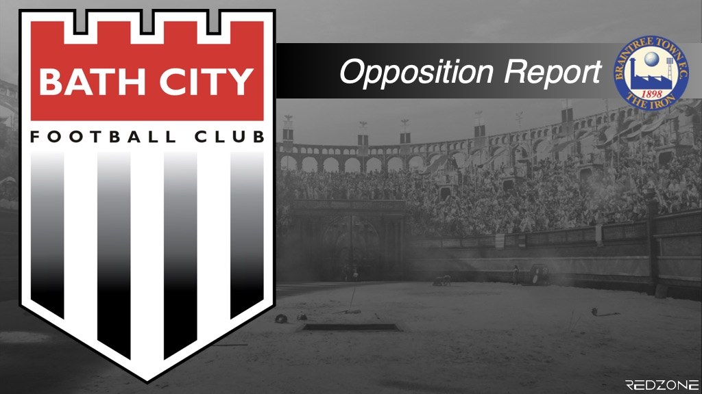

Squash Dissertation: Rally Intensity
Research using 122 matches across six PSA World Tour events to examine rally intensity, player profiling, and the link between outcome and ranking.
Open ProjectPortfolio
This portfolio brings together case studies from football, basketball, squash, rugby, cricket, and taekwondo. It is designed to show both breadth across environments and depth in how the work is presented.
How to use this page
Each project is included because it says something useful about the kind of work I can do: applied football, national-programme support, research translation, coach communication, and multi-sport adaptability.
Research using 122 matches across six PSA World Tour events to examine rally intensity, player profiling, and the link between outcome and ranking.
Open Project
Academy analysis support for Liverpool FC U15/U16, focused on zone penetration, attacking strategies, and clear visual communication.
Open Project
Senior football support combining real-time coding, set-piece review, and tactical reporting to sharpen scoring opportunities.
Open Project
Performance support, coaching, and operational leadership within a growing basketball programme.
Open ProjectCoding and analysis support for the RFU's 2024/25 head contact study, supporting player-welfare research in English rugby union.
Open ProjectCompetition review and performance insight supporting Team GB Taekwondo's Olympic-pathway preparation.
Open ProjectDartfish-led post-match and set-piece analysis with interactive reporting for academy coaches and players.
Open ProjectVideo review processes and performance breakdowns adapted for cricket environments.
Open ProjectApplied match review and feedback support in netball performance settings.
Open ProjectHead coaching and video-supported player development across Cardiff University Women's BUCS 2s and 3s.
Open ProjectNeed a closer look?
If you want to discuss a relevant example or see how this work could translate to your environment, get in touch.